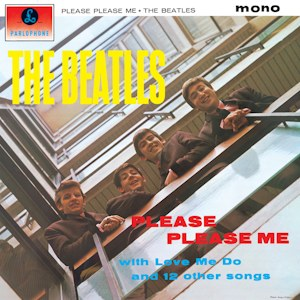
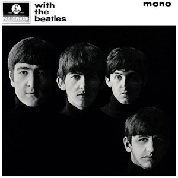
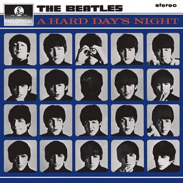
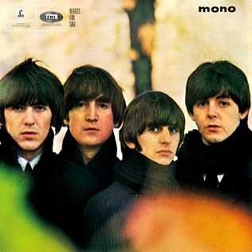
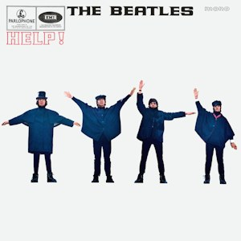
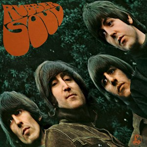
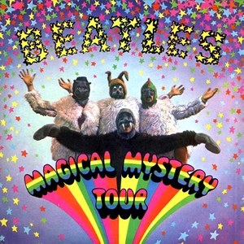
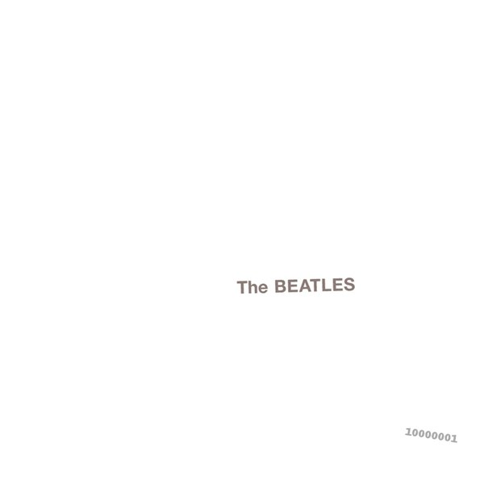
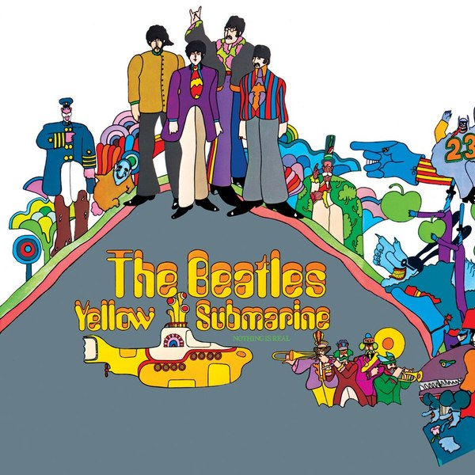

Please Please Me
Первый альбом группы. Почти все песни записаны за один день — 11 февраля 1963 года.
Список песен (14)
- I Saw Her Standing There
- Misery
- Anna (Go to Him)
- Chains
- Boys
- Ask Me Why
- Please Please Me
- Love Me Do
- P.S. I Love You
- Baby It's You
- Do You Want to Know a Secret
- A Taste of Honey
- There's a Place
- Twist and Shout

With The Beatles
Второй альбом. Знаменитая чёрно-белая фотография на обложке.
Список песен (14)
- It Won't Be Long
- All I've Got to Do
- All My Loving
- Don't Bother Me
- Little Child
- Till There Was You
- Please Mister Postman
- Roll Over Beethoven
- Hold Me Tight
- You Really Got a Hold on Me
- I Wanna Be Your Man
- Devil in Her Heart
- Not a Second Time
- Money (That's What I Want)

A Hard Day's Night
Первый альбом, в котором все песни написаны Ленноном и Маккартни.
Список песен (13)
- A Hard Day's Night
- I Should Have Known Better
- If I Fell
- I'm Happy Just to Dance with You
- And I Love Her
- Tell Me Why
- Can't Buy Me Love
- Any Time at All
- I'll Cry Instead
- Things We Said Today
- When I Get Home
- You Can't Do That
- I'll Be Back

Beatles For Sale
Четвёртый альбом, записанный в перерывах между гастролями.
Список песен (14)
- No Reply
- I'm a Loser
- Baby's in Black
- Rock and Roll Music
- I'll Follow the Sun
- Mr. Moonlight
- Kansas City / Hey-Hey-Hey-Hey!
- Eight Days a Week
- Words of Love
- Honey Don't
- Every Little Thing
- I Don't Want to Spoil the Party
- What You're Doing
- Everybody's Trying to Be My Baby

Help!
Песни из одноимённого фильма. Здесь вышла знаменитая «Yesterday».
Список песен (14)
- Help!
- The Night Before
- You've Got to Hide Your Love Away
- I Need You
- Another Girl
- You're Going to Lose That Girl
- Ticket to Ride
- Act Naturally
- It's Only Love
- You Like Me Too Much
- Tell Me What You See
- I've Just Seen a Face
- Yesterday
- Dizzy Miss Lizzy

Rubber Soul
В песне «Norwegian Wood» впервые звучит индийский ситар.
Список песен (14)
- Drive My Car
- Norwegian Wood (This Bird Has Flown)
- You Won't See Me
- Nowhere Man
- Think for Yourself
- The Word
- Michelle
- What Goes On
- Girl
- I'm Looking Through You
- In My Life
- Wait
- If I Needed Someone
- Run for Your Life

Revolver
Альбом с песнями «Eleanor Rigby» и «Yellow Submarine».
Список песен (14)
- Taxman
- Eleanor Rigby
- I'm Only Sleeping
- Love You To
- Here, There and Everywhere
- Yellow Submarine
- She Said She Said
- Good Day Sunshine
- And Your Bird Can Sing
- For No One
- Doctor Robert
- I Want to Tell You
- Got to Get You into My Life
- Tomorrow Never Knows

Sgt. Pepper's Lonely Hearts Club Band
Один из первых концептуальных альбомов в истории рок-музыки.
Список песен (13)
- Sgt. Pepper's Lonely Hearts Club Band
- With a Little Help from My Friends
- Lucy in the Sky with Diamonds
- Getting Better
- Fixing a Hole
- She's Leaving Home
- Being for the Benefit of Mr. Kite!
- Within You Without You
- When I'm Sixty-Four
- Lovely Rita
- Good Morning Good Morning
- Sgt. Pepper's Lonely Hearts Club Band (Reprise)
- A Day in the Life

Magical Mystery Tour
Песни из одноимённого телефильма.
Список песен (11)
- Magical Mystery Tour
- The Fool on the Hill
- Flying
- Blue Jay Way
- Your Mother Should Know
- I Am the Walrus
- Hello, Goodbye
- Strawberry Fields Forever
- Penny Lane
- Baby, You're a Rich Man
- All You Need Is Love

The Beatles
«Белый альбом» — двойной альбом из 30 песен.
Список песен (30)
- Back in the U.S.S.R.
- Dear Prudence
- Glass Onion
- Ob-La-Di, Ob-La-Da
- Wild Honey Pie
- The Continuing Story of Bungalow Bill
- While My Guitar Gently Weeps
- Happiness Is a Warm Gun
- Martha My Dear
- I'm So Tired
- Blackbird
- Piggies
- Rocky Raccoon
- Don't Pass Me By
- Why Don't We Do It in the Road?
- I Will
- Julia
- Birthday
- Yer Blues
- Mother Nature's Son
- Everybody's Got Something to Hide Except Me and My Monkey
- Sexy Sadie
- Helter Skelter
- Long, Long, Long
- Revolution 1
- Honey Pie
- Savoy Truffle
- Cry Baby Cry
- Revolution 9
- Good Night

Yellow Submarine
Музыка к мультфильму «Жёлтая подводная лодка».
Список песен (13)
- Yellow Submarine
- Only a Northern Song
- All Together Now
- Hey Bulldog
- It's All Too Much
- All You Need Is Love
- Pepperland
- Sea of Time
- Sea of Holes
- Sea of Monsters
- March of the Meanies
- Pepperland Laid Waste
- Yellow Submarine in Pepperland

Abbey Road
Последний альбом, записанный всеми участниками вместе.
Список песен (17)
- Come Together
- Something
- Maxwell's Silver Hammer
- Oh! Darling
- Octopus's Garden
- I Want You (She's So Heavy)
- Here Comes the Sun
- Because
- You Never Give Me Your Money
- Sun King
- Mean Mr. Mustard
- Polythene Pam
- She Came In Through the Bathroom Window
- Golden Slumbers
- Carry That Weight
- The End
- Her Majesty